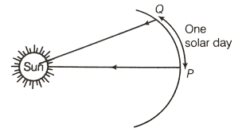

Tides are one of the most reliable phenomena in the world, and we know that they move in and out around twice a day, but not exactly. So, why?
A day on Earth is the time it takes our planet to spin once around its own axis in relation to the Sun. This is known as a solar day, and it
lasts around 24 hours.

However, the time it takes the Earth to reach the same position in relation to the Moon is, on average, 24 hours and 50 minutes, known as a lunar
day. The reason the lunar day is longer than a solar day is because the Moon revolves around Earth at the same direction as Earth rotates around its
axis, so it takes Earth, on average, an additional 50 minutes to "catch up" to the Moon.
Because the tidal force of the Moon is more than twice as strong as the Sun's, the tides follow the lunar day, not the solar day. It takes half a
lunar day, on average 12 hours and 25 minutes, from one high tide to the next, so we have high and low tides nearly twice a day.
The best tide for surfing in most cases is low, to an incoming medium tide. Keep in mind low-tide on shallow surf breaks jack the waves
up higher, leaving less room between the water's surface and the ocean bottom.
As you already know, the quality of your sesssion depends of the tide. Hamdoulah, you can download
applications that will tell you the tide's nature. For example, on this board above, we can see that on the sunday
7th of February, the size of the waves will be comprised between 2.2 and 3.3 meters. The swell (la houle)
is about 11 seconds and finally, the wind has a strenght about 16km/h. Thanks to these informations, you
can anticipate how your session will be, or when to go to surf to have optimals conditions...
Bonus: The dangers of surfing
Marine Life:
Sharks just have to come to the top of the list. Big teeth, attacks with no warning,then all that bubbling red water. The danger that a shark has is obvious without forgetting the Seals, Snakes (sea ones, obviously), Urchins, Jellyfish and Stingrays. All can be potentially life threatening.
Drowning
There is a very real risk of drowning while you surf. Hold-downs, getting trapped on the reef, being separated from your board and not being able to swim in, and unconsciousness through a collision are all possible causes of drowning . So remember, always go surf with a friend who will help you out if you get into trouble.
Waves
Waves may look harmless from the beach but thay can be incredibly powerful. Some are powerful enough to break bones. Wipeouts on waves are a common cause of surf injuries.
Locals
Sometimes the most scary thing about a surf break are the regular surfers. Locals can sometimes be unfriendly, and in some cases, outwardly aggressive. Reduce the chance of an incident with a pack of irascible locals by behaving yourself,don't make a general nuisance to yourself. If you don't pay attention then you will only have yourself to blame.
Riptides
Rips are a hazard for surfers and swimmers and are often present at surf spots. These strengths sapping currents can sweep out to the sea and to the watery grave in the blink of an eye (well, almost!).
Surfboards
Surfboards can be a dangerous piece of sporting equipment. Pointed at one end, with one or more switchblade like fins ready to slice anything that gets in their way. Truly the stuff of nightmares. Keep control of your board while you are surfing and try to keep out of it's malevolent way when you wipeout.
Leash Tangles
The infuriating leash is terribly annoying whilst surfing, continuously trying to wrap itself around any spare limb it can get hold of. You can rest assured that it will try to incapacitate you at the most inopportune time. The only thing to do is to make sure you have a leash with a swivel. The rest is in the hands of the gods.
The Sea Bed
If it's a sandy bottom it will feel like concrete if a wave pounds you down upon it. If it is a rock reef it might as well be concrete, although it will be much more jagged and likely to cause more injuries that regular smooth concrete. If it is corals, you are in real trouble. First, it will cut you like a razor blade. Then it will leave tiny pieces behind to infect you for months after. Here's a tip; never, ever, fall off your board.
Crowds and Newbies (or possibly even worse - crowds of newbies)
The more people in the lineup, the more dangerous it becomes. Boards flying left and right, surfers using bodyboarders as speed bumps, bodyboarders using swimmers as speed bumps—you get the idea! Add newbies to the mix and it's a disaster waiting to happen.
Spiders
Although you are unlikely going to found that in surf, they are well worth a mention. There could be a little incy wincy lurking in your board bag, ready to give you a nasty little nip. Besides, everyone is afraid of spiders.
Don't worry, there's no reasons to be concerned. Surfing is a safe sport and as long as you are careful, you should not encounter any problems. Judging by some of the comments, this slightly tongue in cheek article has been taken quite seriously. Please take it all with a pinch of salt!